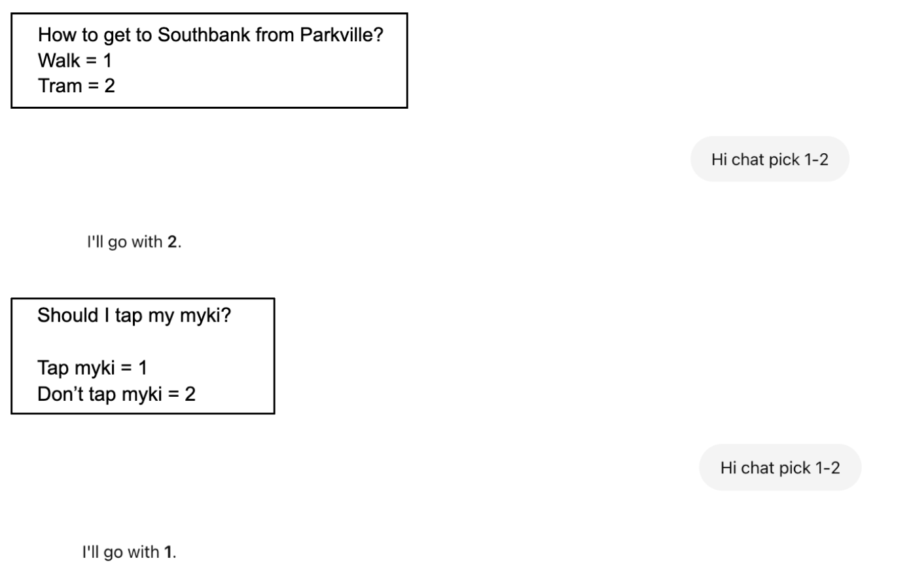

Using the cursor to reveal hidden image.
Pointilism, randomized dot-based reconstruction of an image.Each frame, it grabs a color from a random spot in the image and draws a dot of that color somewhere on the screen.
Using camera filters. THRESHOLD
Exploring camera filters. POSTERIZE,3
I found a really interesting camera filter where it makes the image pixelated and the amount of pixel is controlled by the panning of the cursor.
visit codeThis one is exploring text to point. I really liked the jitter effect through using random()
Slave To the Algorithm
This week we did the SLAVE TO THE ALGORITHM challenge, where for 12 hours, at least 10 of our daily decisions had to be made by chance.
Instead of using a die or spinning wheel, I gave the challenge a twist by asking ChatGPT to pick random numbers. Each number matched a task I had pre-assigned, letting the AI dictate what I did. It followed the same mechanics as a spin-the-wheel game, so I created one in p5.js to visualise the concept of chance. You can even use it yourself to help decide something too!
this spin the wheel is heavily guided by coding train AKA Dan Schiffman.
Coding train link